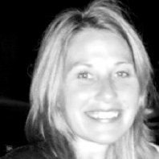

<!DOCTYPE html>
<html lang="en">
<head>
    <meta charset="utf-8">
    <title>Ichor</title>
    <meta name="viewport" content="width=device-width, initial-scale=1.0">
    <meta name="description" content="Ichor">
    <!DOCTYPE html>
<html>
<body>
<script type="text/javascript">
    window.location.replace("http://www.ichorsports.com");
</script>
</body>
</html>

    <script src="http://ajax.googleapis.com/ajax/libs/jquery/1.10.2/jquery.min.js"></script>
    <script src="js/bootstrap.min.js"></script>
    <script src="js/custom.js"></script>

    <link href="css/bootstrap.min.css" rel="stylesheet">
    <link href="css/alternate.css" rel="stylesheet">

    <link rel="stylesheet" href="https://maxcdn.bootstrapcdn.com/font-awesome/4.3.0/css/font-awesome.min.css">
    <link href='http://fonts.googleapis.com/css?family=Lato:400,700,900' rel='stylesheet' type='text/css'>

    <!-- HTML5 shim, for IE6-8 support of HTML5 elements -->
    <!--[if lt IE 9]>
      <script src="http://html5shim.googlecode.com/svn/trunk/html5.js"></script>
    <![endif]-->
</head>
<body>

  <header>

     <div id="dropdown-menu">
      <div class="btn-group">
        <button type="button" class="btn btn-default dropdown-toggle" data-toggle="dropdown" aria-expanded="false"><span class="caret"></span></button>
        <ul class="dropdown-menu dropdown-menu-right" role="menu">
          
          <div class="dropdown-button-container">
            <div class="dropdown-button-div"><li class="dropdown-button"><a href="#what-we-do">What We Do</a></li></div>
          </div>
          <li role="presentation" class="divider"></li>

           <div class="dropdown-button-container">
            <div class="dropdown-button-div"><li class="dropdown-button"><a href="#how-we-do-it">How We Do It</a></li></div>
          </div>
          <li role="presentation" class="divider"></li>

           <div class="dropdown-button-container">
            <div class="dropdown-button-div"><li class="dropdown-button"><a href="#who-we-are">Who We Are</a></li></div>
          </div>
          <li role="presentation" class="divider"></li>

           <div class="dropdown-button-container">
            <div class="dropdown-button-div"><li class="dropdown-button"><a href="#press">Press</a></li></div>
          </div>
          <li role="presentation" class="divider"></li>

           <div class="dropdown-button-container">
            <div class="dropdown-button-div"><li class="dropdown-button"><a href="#contact-us">Contact Us</a></li></div>
          </div>
          <li role="presentation" class="divider"></li>

           <div class="dropdown-button-container">
            <div class="dropdown-button-div"><li class="dropdown-button"><a href="http://app.ichor.me/login" target="blank"></a></li></div>
          </div>

        </ul>
      </div>
    </div>

    <div class="logo-col">
      
    </div>
    <nav>
      <a href="http://app.ichor.me/login"><div class="nav-button last-button"></div></a>
      <a href="#contact-us"><div class="nav-button">Contact Us</div></a>
      <a href="#press"><div class="nav-button">Press</div></a>
      <!--<a href="#advisors"><div class="nav-button">Advisors</div></a>
      <a href="#partners"><div class="nav-button">Partners</div></a>-->
      <a href="#who-we-are"><div class="nav-button">Who We Are</div></a> 
      <a href="#how-we-do-it"><div class="nav-button">How We Do It</div></a>
      <a href="#what-we-do"><div class="nav-button">What We Do</div></a>
    </nav>
    
  </header>

<div class="video-container">
  <div class="video-col">
    <iframe height="100%" src="https://www.youtube.com/embed/vGY-MkB5Shg?rel=0&amp;controls=0&amp;showinfo=0" frameborder="0" allowfullscreen></iframe><!-- Original Size: width="853" height="480" -->
  </div>
</div>

</div>

<div class="container">

  <h2>WHAT WE DO</h2>
  <div class="divider-line"></div>
  <a name="what-we-do" class="anchor">HIDDEN ANCHOR TEXT</a>
  <div class="row">
    <div class="col-md-8 col-md-offset-2">
      <p>Health and fitness is more than just calories burned. At Ichor we not only track movements, but also analyze vitals to provide a complete picture of health and fitness.</p>
      <p>Our cutting edge fitness monitor and software platforms have been developed to improve player safety and allow athletes to push the limits of their training. The Ichor system also gives coaches a comprehensive picture of their players’ physical well being.</p>
      <p>We have specialized products for use in collegiate athletics as well as the high school and professional levels. Whatever your level of competition, let us help provide the solution to best fit your team.</p>
    </div>
  </div>

  <h2>HOW WE DO IT</h2>
  <div class="divider-line"></div>
  <a name="how-we-do-it" class="anchor">HIDDEN ANCHOR POINT</a>
  <div class="row">
    <div class="col-md-8 col-md-offset-2">
      <h4>Personalization</h4>
      <p>The Ichor team will come meet with your coaches and athletes to seamlessly integrate our system. From there, our sports scientists and statisticians work closely with our customers to custom mold our products to fit your needs.</p>
      <h4>Simplicity</h4>
      <p>Ensure your athletes wear our device and Ichor does the rest. Data is compiled and reports are delivered at the times most convenient for you.</p>
      <h4>Support</h4>
      <p>Your experience with our products is important to us. We are available 24/7 to work through any problem or need that may arise.</p>
    </div>
  </div>

  <h2>TEAM</h2>
  <div class="divider-line divider-line-xl"></div>
  <a name="who-we-are" class="anchor">HIDDEN ANCHOR POINT</a>
  <div class="row">
    <div class="col-sm-6">
      
      <h4>Ty Frix</h4>
      <p>Ty walked onto the University of Georgia football team in 2008 and served as the long snapper from 2009-2012, starting 54 consecutive games - a UGA record. He was voted Team Captain as a senior and graduated magna cum laude in Biomedical Engineering in 2012. Ty went on to receive an MBA in Finance and Entrepreneurship from Georgia in 2014.</p>
    </div>
    <div class="col-sm-6">
      
      <h4>Andrew Johnson</h4> 
      <p>Andrew was a defensive back at the University of Georgia from 2006-2009 and was a biomedical engineering major. After graduating cum laude, he enrolled in medical school at the Medical College of Georgia. Andrew then went on to receive an MBA from the University of Georgia in the spring of 2014.</p>
    </div>
  </div>
  <div class="row">
    <div class="col-sm-6 col-md-offset-3">
      
      <h4>Chip Standifer</h4>
      <p>Chip Standifer is an entrepreneurial executive with experience developing wireless, embedded, real-time and web projects. Enjoys spirited team development, understands the architecture, planning, management and execution of new technology products in a startup, multi-disciplinary team environment for large scale shrink wrap software, consumer device manufacturing or regulated marketplaces. Experienced programmer capable of “filling the holes” in a wide variety of software and hardware development environments down to the device driver level.</p>
    </div>
  </div>

  <h2>PARTNERS</h2>
  <div class="divider-line divider-line-xl"></div>
  <a name="partners" class="anchor">HIDDEN ANCHOR TEXT</a>
  <div class="row"> <! BLACKBOX SOFTWARE ROW !>
    <div class="col-md-6 col-md-offset-1">
      
    </div>
    <div class="col-md-2">
      
      <p><b>Kelly Storm, PhD</b></p>
    </div>
    <div class="col-md-2">
      
      <p><b>Doug Brewer, PhD</b></p>
    </div>
  </div>
  <div class="row"> <! TIER ONE ROW !>
    <div class="col-md-6 col-md-offset-1">
      
    </div>
    <div class="col-md-2">
      
      <p><b>Tom Tooley</b></p>
    </div>
  </div>
  <div class="row"> <! INTEGRATION ROW !>
    <div class="col-md-6 col-md-offset-1">
      
    </div>
    <div class="col-md-2">
      
      <p><b>Chuck Pelly</b></p>
    </div>
    <div class="col-md-2">
      
      <p><b>Joan Gregor</b></p>
    </div>

  </div>

  <h2>ADVISORS</h2>
  <div class="divider-line divider-line-xl"></div>
  <a name="advisors" class="anchor">HIDDEN ANCHOR POINT</a>
  <div class="row">
    <div class="col-sm-4">
      
      <h4>Dee Yancy</h4>
      <p>Dee is the president and CEO of State Mutual Insurance Company based out of Rome, Ga.  He has 30+ years of experience in all realms of the insurance industry and has co-founded several successful startup medical companies  during his tenure. His vast knowledge of health care reimbursement, sales, and distribution make him a perfect fit for the Ichor team. He now serves as chairman of the Board of Georgia Life & Health Guaranty Association and is involved on several other boards across Georgia.</p>
    </div>
    <div class="col-sm-4">
      
      <h4>Dr. Mitch Frix</h4>
      <p>Dr. Frix is an Orthopedic Surgeon with 30+ years invested in the medical field, specifically sports medicine. He trained with the Pittsburgh Steelers and their team doctor, Jim Bradley, during his Sports Medicine Fellowship with ORV. He then returned to Georgia where he founded the Hamilton Sports Medicine program in 1997 which now has 20+ schools under its care. Dr. Frix is also a University of Georgia Football Letterman with three SEC championships and one National Championship.</p>
    </div>
    <div class="col-sm-4">
      
      <h4>Dr. Parker Grow</h4> 
      <p>Dr. Grow is an Interventional Cardiologist in Athens, GA with 15+ years in his field. He trained in internal medicine and cardiology at Emory University Hospital in Atlanta, GA.He is a member of the FACC and FSCAI societies. Dr. Grow's practice with Athens Cardiology Group is affiliated with the Georgia Regents University/University of Georgia partnership highly involved in instruction and education of medical students.</p>
    </div>
  </div>
  <div class="row">
    <div class="col-sm-4 col-sm-offset-2">
      
      <h4>W. Daniel Hensley, Jr.</h4> 
      <p>Dan Hensley, a University of Georgia Alumnus, is a 30 year veteran of the Paper and Packaging Industry. He has led both operations and sales organizations for several public and private companies. Dan has participated in start-up facilities as well as investment firm integrations.  He is currently a Business Unit Manager for RockTenn. Since 2013, Dan has served as a practical business advisor to Ichor.</p>
    </div> 
    <div class="col-sm-4">
      
      <h4>Yale Zhang</h4> 
      <p>Yale Zhang is a serial entrepreneur with over 10 years experience in the medical industry. He is the founder and CEO of Safeheart where he has envisioned and developed several medical consumer goods. Yale has a background in import/exports, software and hardware development, supply chain logistics, and product manufacturing and he is fluent, both spoken and written, in Mandarin Chinese.</p>
    </div>
  </div>

  <h2>PRESS</h2>
  <div class="divider-line"></div>
  <a name="press" class="anchor">HIDDEN ANCHOR POINT</a>
  <div class="row">
    <a href="https://www.youtube.com/watch?v=m5KK4gpz9gE" target="blank"></a>
  </div>
  <div class="row">
    
  </div>

  <h2>JOBS</h2>
  <div class="divider-line"></div>
  <div class="row">
    <div class="col-md-8 col-md-offset-2">
      <p>The Ichor team is currently hiring for the following positions:</p>
      <p>&#8226; <b>Sports Scientists</b></p>
      <p>&#8226; <b>Statisticians</b></p>
      <p>&#8226; <b>C Developers</b></p> 
      <p>&#8226; <b>C.S. & Math intern (Summer 2015)</b></p>
    </div>
  </div>

  <h2>CONTACT</h2>
  <div class="divider-line"></div>
  <a name="contact-us" class="anchor">HIDDEN ANCHOR POINT</a>
  <div class="row">
    <p>Call or email us to find out how we can help your team reach its full potential.</p>
  </div>
  <div class="row">
    <div class="col-md-4 col-md-offset-2">
      
      <h4>Phone</h4>
      <a href="tel:+7064833461"><div class="contact-button"><h4>(706) 483-3461</h4></div></a>
    </div>
    <div class="col-md-4">
      
      <h4>Email</h4>
      <a href="mailto:team@ichor.me"><div class="contact-button"><h4>team@ichor.me</h4></div></a>
    </div>
  </div>

  
  <div class="row">
    <a href="https://www.linkedin.com/company/ichor" target="blank"><i class="fa fa-linkedin-square fa-5x"></i></a>  
    <a href="https://twitter.com/ichorusa" target="blank"><i class="fa fa-twitter-square fa-5x"></i></a>
    <a href="https://www.facebook.com/ichorusa" target="blank"><i class="fa fa-facebook-square fa-5x"></i></a>
    <a href="https://instagram.com/ichor_usa/" target="blank"><i class="fa fa-instagram fa-5x"></i></a>
  </div>

  <a href="index.html"><p class="copyright">&copy; 2015 Ichor LLC</p></a>

</div>

<!-- Added this script for tracking per Ty's request on 11/15/2015 -->
<script type="text/javascript">
  var cdJsHost = (("https:" == document.location.protocol) ? "https://" : "http://");
  document.write(unescape("%3Cscript src='" + cdJsHost + "webfront.automational.com/ts.js'type='text/javascript'%3E%3C/script%3E"));
</script>
<script type="text/javascript">
  var cdAnalytics = new clickdimensions.Analytics('webfront.automational.com');
  cdAnalytics.setAccountKey('cds-1054');
  cdAnalytics.setDomain('ichor.me');
  cdAnalytics.trackPage();
</script>

</body>
</html>
